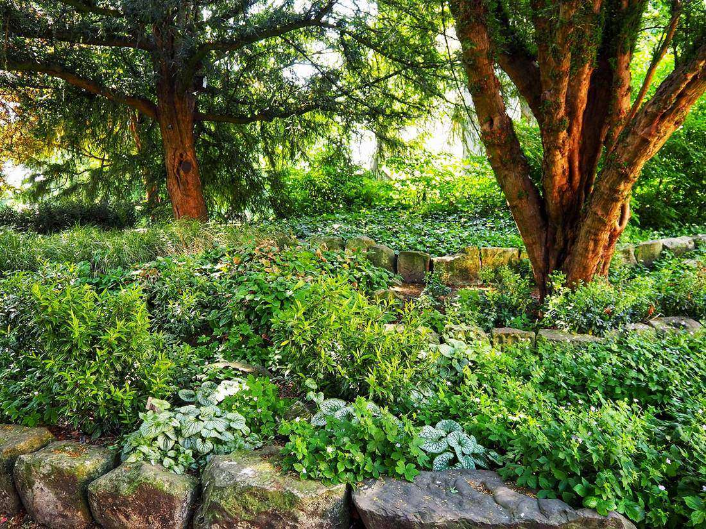
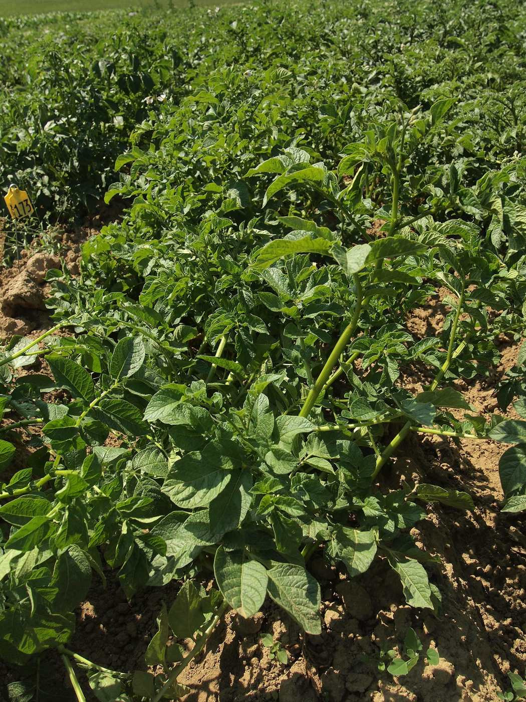
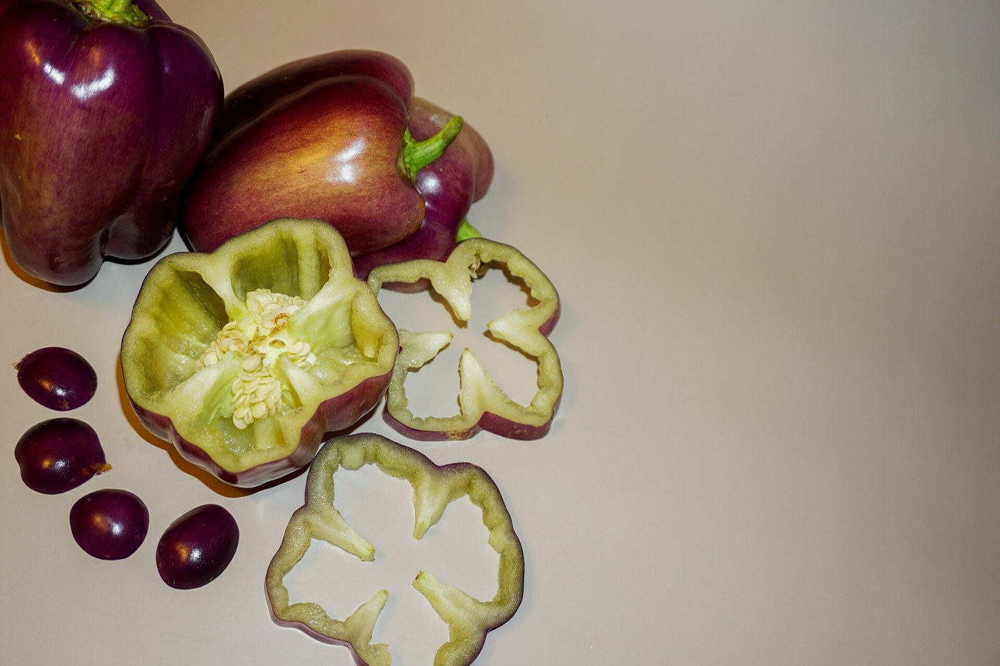
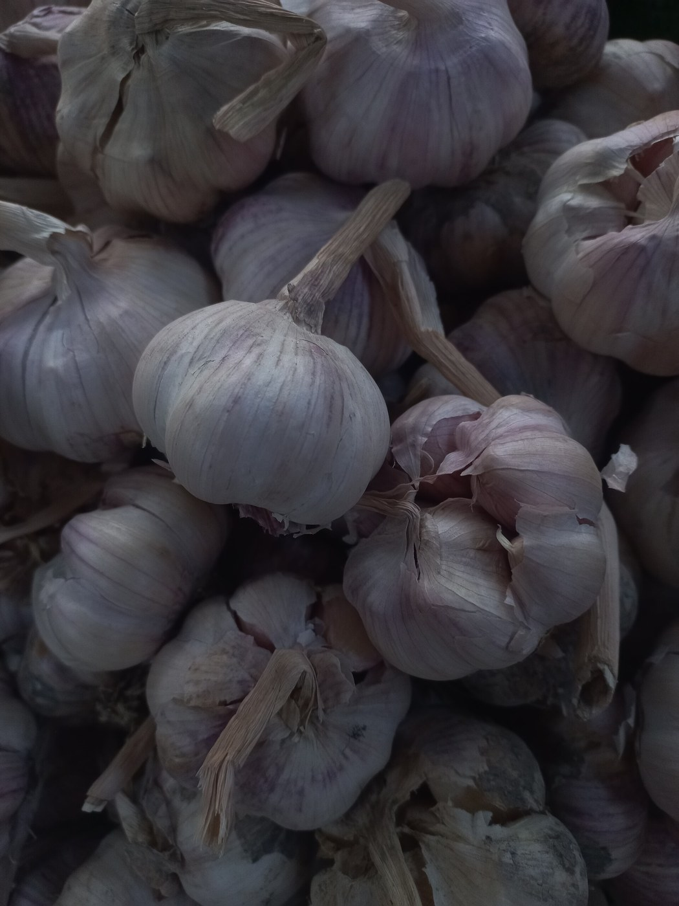
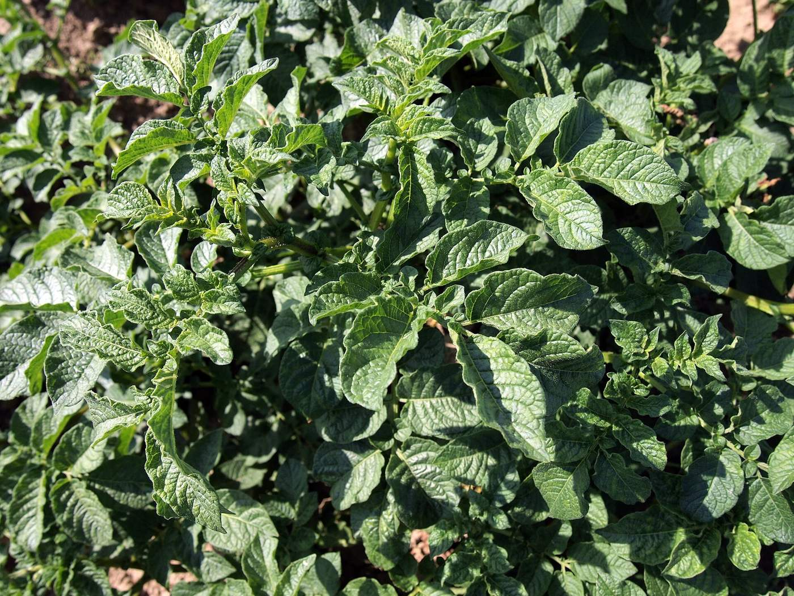

茨城県牛久市・野菜直売所とたまり場
畑のめぐみと、
ふらっと立ち寄れる“うちの縁側”。
とみさんちは、地元の野菜を手に取れる直売所と、人が集まるたまり場が一緒になったお店です。
お店のこと
障害のある方も働ける直売所を、地域の真ん中に。
牛久市の広報資料によると、とみさんちは、就労継続支援B型事業所を運営するNPO法人にじいろの代表が、障害のある方も働ける野菜直売所を探していたことをきっかけに、野菜直売所とたまり場を併設して牛久市の三日月橋生涯学習センター前にオープンしたお店です。Instagramのプロフィールには、古民家を改装した場で、野菜販売・カフェ・地域活性化・地産地消・食品ロス削減に取り組むとあります。ランチは月〜金の完全予約制と紹介されています。
情報源: 牛久市の資料(PDF)/Instagram @tomisanchi_mikazuki
「〜さんち」という店名の意味づけ(ご近所のお宅に遊びに行くような親しみ)は、制作側のイメージです。見出しの言い回しも制作側の表現です。



メニュー・提供内容
野菜と、食べる場所と。
確認できた範囲の提供内容です。時間・価格・詳細は準備中です。写真はフリー素材のイメージで、実際の商品ではありません。









口コミ
こんな声があがりそうな、お店のイメージ
以下は制作側が作った「イメージ例」で、実在のお客様の声ではありません。
イメージ例
とれたての野菜を見ていたら、つい長居してしまいました。
イメージ例
古民家の落ち着いた雰囲気で、ゆっくりお昼をいただけそうです。
イメージ例
地元の野菜を買って、そのまま立ち寄れる場所があるのは心強いです。
アクセス
ご案内
| 所在地 | 〒300-1223 茨城県牛久市城中町1818-4 |
|---|---|
| 電話 | 準備中 |
| 営業時間 | 準備中 |
| 定休日 | 準備中 |
| SNS | Instagram @tomisanchi_mikazuki |
最新の営業状況はInstagramをご確認ください。